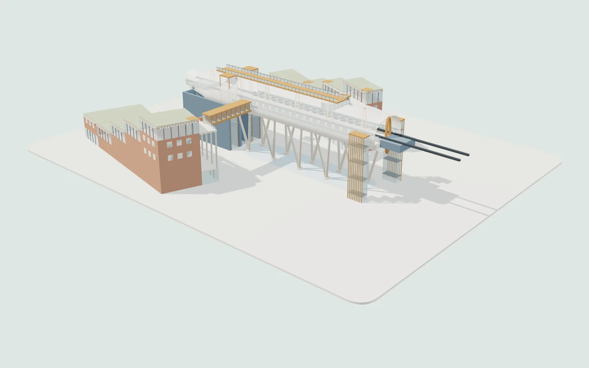
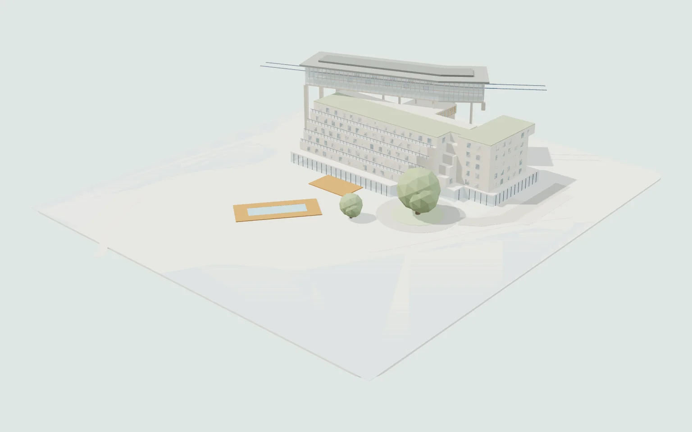
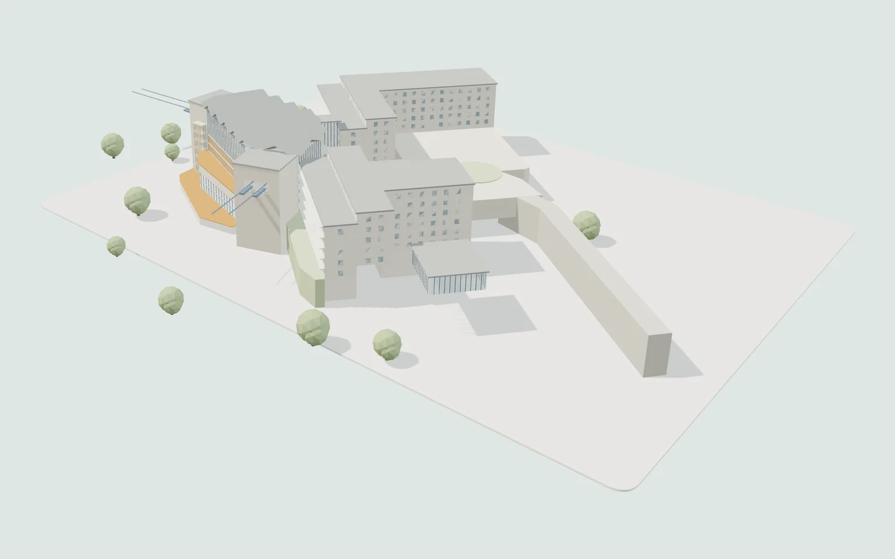
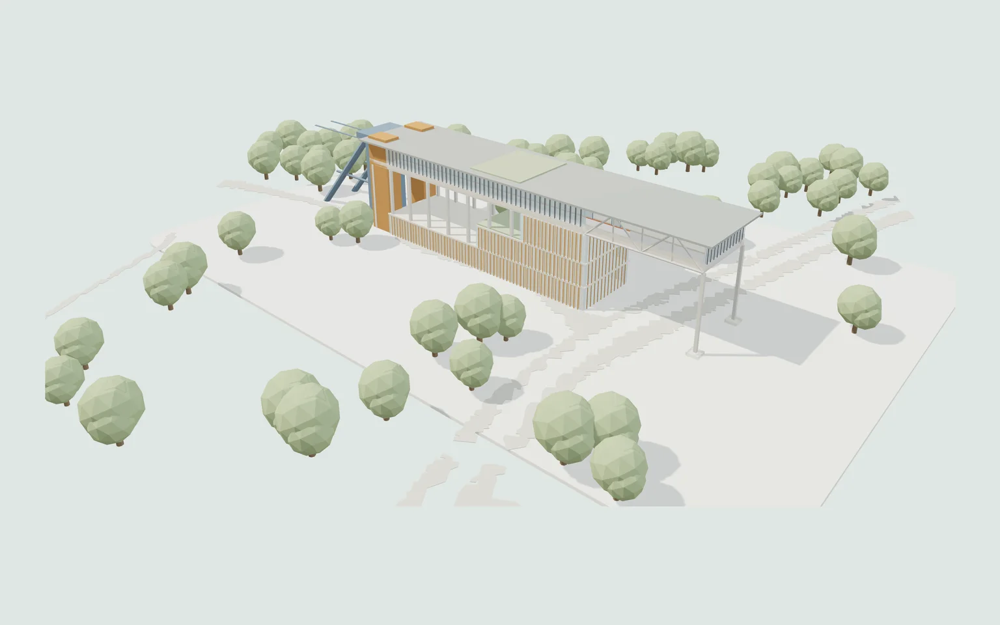

四座車站的 BIM V1.6 模型，可在瀏覽器內環視、漫遊與剖切。下圖依實際標高排列每一層樓板，琥珀色為月台層；點任一層直接進入該站、該層。進站後可再點選任一構件，查看編號、高程與來源圖說。
樓板寬度依該層構件水平範圍等比繪製；月台之間的虛線只示意四站月台標高的連接順序，不代表纜線路徑。



中間站・山城旅館與宴會
旅宿與聚會在同一站。宴會、會議、餐飲與 XR 樂園分層配置，月台在 4F 與 5F 之間，上方是轉乘大廳與雲端餐廳。
